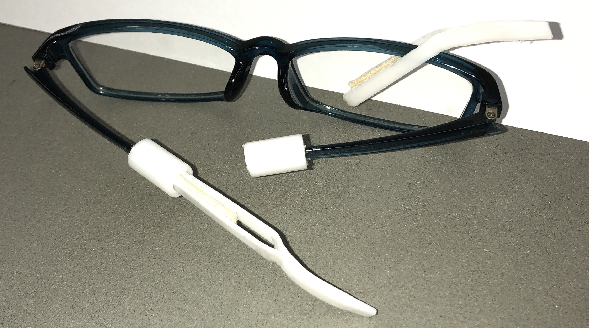

きっかけ
私は、この製品を作ろうと思った理由は、高校生の時からメガネのレンズのくもりをクリーナを
持ち歩かずに、レンズを綺麗にしたいと思っていました。高校の時にふわっとこうすればいいの
では？という頭の中で考えていたものあがあったのですが、なかなか作る機会を取れずにいたの
で、この機会に挑戦することにしました。
初期の作品
初期の作品では、フレームの部分を金属て加工しましたが、かけ心地的に耳にかかる負担がとて
も、不便に感じたので、プラスチック製の素材を使うことにしました。
完成作品
フレームの制作では、なかなかうまくクリーナ部分との装着がうまくいかずにテクずりましたが
、なんとか完成させることができました。良かってです。


感想・反省
今回の制作での反省は、製品のディテールをもっとしっかりこだわることができたのではないか
という葛藤が自分の中であったことです。しかし私は、その違和感を見逃し、妥協してしまいま
した。なので次回このような制作をする機会があったら、細部にこだわって制作を進めていきた
いとおもいます。